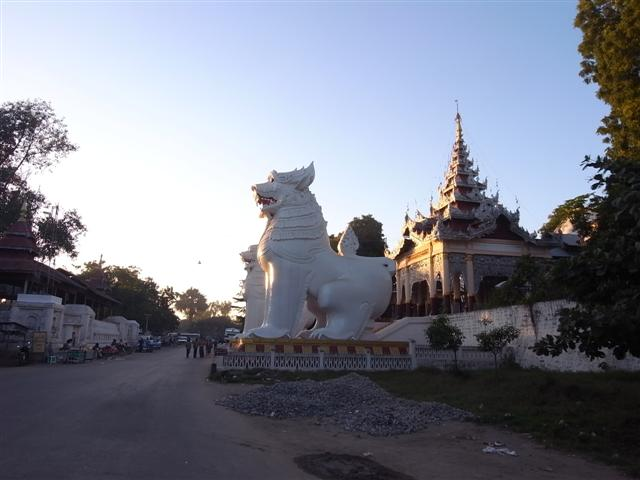

～天福旅店～
巴士凌晨二時停半小時，我們又再吃東西，兩位朋友竟然吃起雞髀飯來，我沒有胃口，只想回去睡。等到車開，上去即濛濛瀧瀧地睡，早上六時到達 Mandalay。Cool 男不再 cool，因他完全是那種以用最低價錢旅遊為榮的背包客，走來和我 share taxi，二人 4000 Kyat 去 ET Hotel。
中途他問我在 Nyaungshwe 住多少錢，我說 6 USD 他好像很不滿地說他住的要 7 USD，又問我 ET 多少錢，我說 11 USD，他就說「fucking expensive」。
到達 ET Hotel，Mr. Cool 因太貴離開，這時早上六時半，我的房一早預備好，很不錯的房間，還有整個旅程最正的熱水花灑呢。這房還有一個掛衣服的架，原來這旅館是中國人開的，果然中國人都很注重洗熱水澡和晾衫！老闆娘還很好人地可以讓我今早吃早餐（因為我第四個早上要乘早船沒早餐吃）。 原來，ET Hotel 中文名叫做天福旅店呢。
Mandalay 是大城市，我預了遊三天，但主要是到市外的一些古老地方，反而 Mandalay 本身我也不是太大興趣。在街上被人叫住，問我想不想包車去幾個出名古老城市，反正都去，就約定了他。但其實我這天腦子總是記掛著去 Mrauk U 的方法，真是心掛掛，另外就是旅遊書說由 Mandalay 去 Bagan 的慢船是 local 的，而 trekking guide Harri 也這想提過（事後發覺這個 Harri 的資訊超級 outdated），我去各旅館問去 Bagan 的船，結果全是一樣，星期三只有快船。
在緬甸的使費，我盡量都想用在 local 上，非必要都不想用在政府，打聽下原來現在去 Bagan 的快船也是私人公司，（應該）和政府無關的，但要 36 USD，不過如果乘巴士就很便宜，不用 10000 Kyat，卻是政府的，所以選擇了乘船。
在行去 Mandalay Palace 的途中，遇到一個講廣東話的人，他在那間大酒店 Mandalay Swan Hotel 做，今天是他的假期，連續工作了八天，又說這裏很苦悶，沒什麼娛樂，又問我識唔識 Robert Lam，吓？唔識喎...
Mandalay Palace 很大，周圍是護城河，行到去南面的門不准進入，只有東面的入口才開放給遊客。行著行著，一位男孩問我要不要坐 trishaw。初時我不想，但我覺得應該用錢在這些人身上，所以包了他的車，先去 Mahamuni Paya，然後午餐休息，下午才去 Mandalay Palace 和附近幾個 Pagoda 及 Mandalay Hill。
男孩只有十四歲，看他踏得頗辛苦，有些路地面不平，要下車推，車速都很慢。
Mahamuni Paya 人頭湧湧，在門口有一個女人給我一個膠袋，我剛巧又忘記了自備膠袋裝鞋，以為她這樣好心，其實她是賣花女，要了她的膠袋，便要買她的花，緬甸寺廟總有很多善信獻花，那種花很香，像是昂山素姬被釋放時人民獻給她的花。
這廟真的很多人，門前一條長長的貢品店街水洩不通，過後進入大堂，很多人跪在地上，遠處是一座金色佛像，佛像旁有很多很多的人，排隊圍著它，把那些正正方方的金色紙貼上佛像上，正宗往面上貼金。
佛教眾生平等，但佛寺的大佛卻不准女性接近，只能在某個距離跪拜，我不知道這和 Theravada（南傳佛教）有沒有關係，這裏的佛教，和香港的很不同，這裏還竟然有占卜師為人看掌。
回到 ET Hotel 小休，向老闆問往 Mrauk U 的機票，得知這裏的航空公司即使有開門也要聯絡 Yangon 總公司才能確認機位，加上今天是假期，老闆說明天會為我辦。對了，我忘了今天是聖誕節。
Barry 和 Helen 曾向我推薦 Mandalay 的 Chapatti Stand，說那兒的 Chapatti 超正，比英國的還好味，我問為何英國有 Chapatti 的呢？原來英國很久前已經住了很多很多的印度人，Chapatti 簡直已經可以當作英國的當地食物了。他們笑說有時更會以 Chapatti 來待客。
不過我卻找來找去都找不到這 Stand，在那個街角經過了多次之後，一個男人問我找什麼，我告訴他之後他說檔口在五時後才開，然後他帶我到附近的 Nepal Food。這男人是 trishaw 司機，照例向我兜搭生意，但我已經包了那男孩的車。
午餐之後繼續坐男孩的 trishaw 去 Mandalay Palace，慢到呢，不知為什麼 trishaw 似乎不准走在 Palace 周圍的大車路，要兜幾次路才到。不過，這座 Mandalay Palace 嘛，簡直是不用進入的，完全沒看頭，沒東西好看，而且是 forced labour 建成的，還要付 10 USD，是個完全可以 skip 的地方。
離開 Mandalay Palace 的時候，竟然在城門見到剛才那個男司機，他在等我！說他沒生意，想我幫忙。眼見這裏的 trishaw 生意真的淡得很。今晚我會去 Mintha Theatre 看傳統表演，就約他先載我去吃飯然後再載我去劇院，他開價才 2500 Kyat！
接近黃昏，只參觀了數個 Mandalay Hill 山腳的廟，便趕去山。在山腳的正門，被一位仁兄叫我坐他的車，說現在已經五時許，上山要起碼四十五分鐘，日落在五時半，說我一定趕不到，唯有坐他的車，收 4000 kyat。我初時被他騙到，而且我竟然把 4000 Kyat 聽成 400 Kyat，幸好車還未開我再問他才發覺聽錯了，4000 Kyat！傻的嗎？即刻飛奔下車急步走樓梯上山。
什麼要用四十五分鐘是騙人的，根本只用二十分鐘就上到頂了。要看日落反而是尾三層最好。對於日出日落並不熱衷的我在咸蛋黃消失後便趕下山，怎料下山我選了車路，兜到暈，比行樓梯真遠很多很多。如果由車路上山，就真的最少四十五分鐘了。
天黑得好快，回去旅館時很冷。在 ET Hotel 附近一間 Internet Cafe 上網，這裏的網絡比 Kalaw 快得多了！然後今天約定的司機載我去 too too 吃緬甸菜，勁正，在這裏我吃了最好吃的咖哩蝦。在 too too 有一檯中國人，是雲南攝製隊，明天在其他地方也遇見他們工作。
飯後到 Mintha 看傳統音樂舞蹈表演，那些傳統樂器很特別，我在別的地方未見過，不過其他表演麻麻地，臨尾那個配上英語的 farewell song，令我汗顏。
回去旅館途中我和司機傾計，他的 trishaw 是買的，那時用了 10 美元，現在靠這維生還過得去。他說最辛苦是有時要載一些西方人，超肥超重，他說：「They eat so much...」。我即時想起那兩個在 Inle Lake 狂隊啤食 Pizza 的鼻鼾男。回到 ET Hotel，我付多 500 Kyat 司機，他很感激地道謝。


Madalay
Mandalay Palace
Trishaw
Mahamuni Paya
數字街
Mandalay Palace

Mandalay Hill

Too Too Restaurant